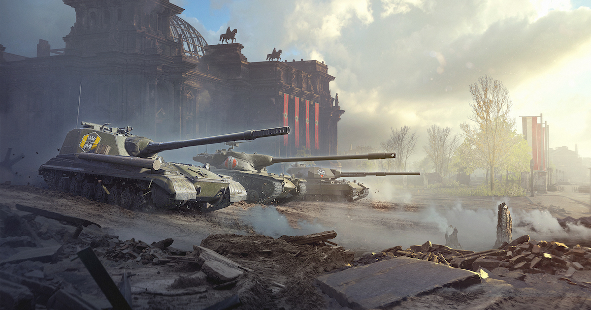
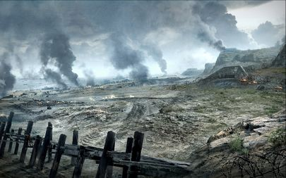

World of Tanks is a simulator game, where you command a crew of a tank and fight with other 14 commanders agains 15 enemy commanders. This game has Tanks from the 1910s up to 1970s. These Tanks are grouped in different tiers, wich is based on theyre technological advancment. There are 10 different nations, and they have all various strength and weakneses. Every nation hase the same type of a Techtree, some have more some have less tanks awailable for them. These techtrees provide a wide range of playing styles, there are faster paced and unforgiving for mistakes and slower more forgiving tank types. These tech trees are:
The maps are from real world battles. There are a lot of maps with different objectievs, for example:
